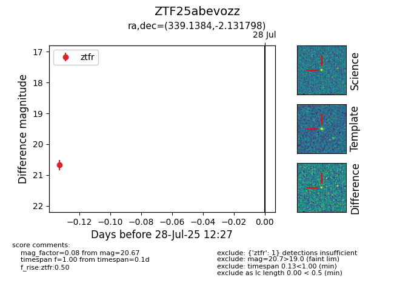

Target ZTF25abevozz at 2025-07-28 12:27, see:
FINK: fink-portal.org/ZTF25abevozz
Lasair: lasair-ztf.lsst.ac.uk/objects/ZTF25abevozz
ALeRCE: alerce.online/object/ZTF25abevozz
alt names
ZTF25abevozz (ztf,fink)
coordinates:
equatorial (ra, dec) = (339.1384,-2.13180)
galactic (l, b) = (64.8754,-49.17386)
photometry
last ztfr=20.67
1 ztfr detections
